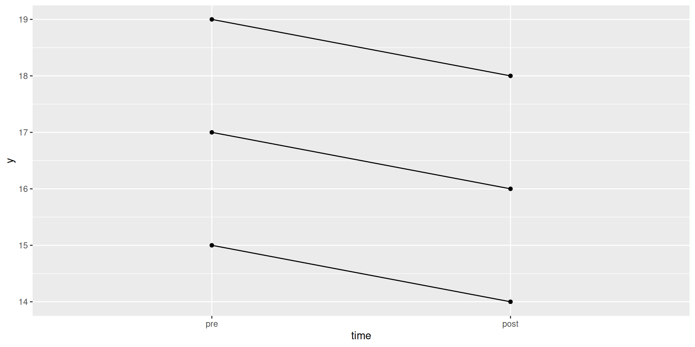

library(tidyverse)When pivot-wider goes wrong
Packages
The inevitable:
Some long data that should be wide
- Six observations of variable
y, but three measured before some treatment and three measured after. - Really matched pairs, so want column of
y-values forpreand forpost. pivot_wider.
What happens here?
d %>% pivot_wider(names_from = time, values_from = y)- Should be three
prevalues and threepost. Why did this happen? pivot_widerneeds to know which row to put each observation in.- Uses combo of columns not named in
pivot_wider, hereobs(only).
The problem
d %>% pivot_wider(names_from = time, values_from = y)- There are 6 different
obsvalues, so 6 different rows. - No data for
obs2 andpre, so that cell missing (NA). - Not enough data (6 obs) to fill 12 (\(= 2 \times 6\)) cells.
obsneeds to say which subject provided which 2 observations.
Fixing it up
- column
subjectshows which subject provided eachpreandpost. - when we do
pivot_wider, now only 3 rows, one per subject.
Coming out right
d2 %>% pivot_wider(names_from = time, values_from = y)- row each observation goes to determined by other column
subject, and now apreandpostfor eachsubject. - right layout for matched pairs \(t\) or to make differences for sign test or normal quantile plot.
- “spaghetti plot” needs data longer, as
d2.
Spaghetti plot
d2 %>% mutate(time = fct_inorder(time)) %>%
ggplot(aes(x = time, y = y, group = subject)) +
geom_point() + geom_line()
- each subject’s
ydecreases over time, with subject 1 highest overall.
Another example
- Two independent samples this time
- These should be arranged like this
- but what if we make them wider?
Wider
d3 %>% pivot_wider(names_from = group, values_from = y)- row determined by what not used for
pivot_wider: nothing! - everything smooshed into one row!
- this time, too much data for the layout.
- Four data values squeezed into each of the two cells: “list-columns”.
Get the data out
- To expand list-columns out into the data values they contain, can use
unnest:
d3 %>% pivot_wider(names_from = group, values_from = y) %>%
unnest(c(control, treatment))- in this case, wrong layout, because data values not paired.
A proper use of list-columns
d3 %>% nest_by(group) %>%
summarize(n = nrow(data),
mean_y = mean(data$y),
sd_y = sd(data$y))- another way to do
group_byandsummarizeto find stats by group. - run this one piece at a time to see what it does.